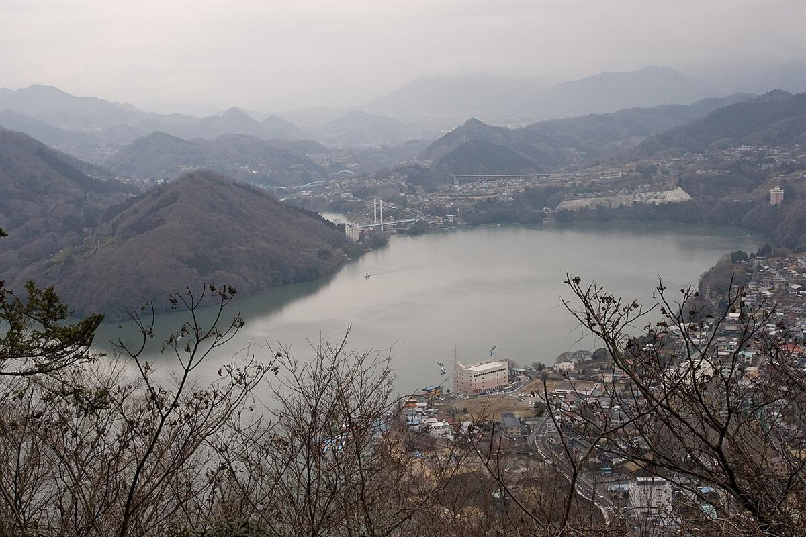

体験・工作相模原市
ハロウィン限定体験メニュー
いつ9/5（土）〜10/31（土） 火曜休館日を除く毎日
場所藤野芸術の家（相模原市緑区）
対象どなたでも
木工クラフト2,500円ほか（内容により異なる）予約不要3〜6歳小学生
子連れポイント汚れてもよい服装がおすすめです。クラフト体験は有料です。
ハロウィン仕様の木工・サンドブラスト・織物クラフトが体験できます。期間限定のかぼちゃメニューも楽しめます。

エリア別
相模原市で開かれる子ども・親子向けのイベントを、日付順にまとめています。お祭りや工作体験、公園の自然観察、図書館のおはなし会など、相模原市周辺で子どもと出かける先を探すときにどうぞ。
いつ9/5（土）〜10/31（土） 火曜休館日を除く毎日
場所藤野芸術の家（相模原市緑区）
対象どなたでも
子連れポイント汚れてもよい服装がおすすめです。クラフト体験は有料です。
ハロウィン仕様の木工・サンドブラスト・織物クラフトが体験できます。期間限定のかぼちゃメニューも楽しめます。
いつ9/18（金）〜12/6（日）
場所相模川ふれあい科学館（アクアリウムさがみはら）
対象どなたでも
子連れポイント室内の科学館なので、雨の日のおでかけ先にぴったりです。生きものが好きな子におすすめです。
世界各地に生息するさまざまなカエルを地域ごとに紹介する特別展示です。
いつ10/10（土）〜12/13（日） 10/17には学芸員による展示解説あり
場所相模原市立博物館
対象どなたでも
子連れポイント雨の日のおでかけ先にも向いています。歴史や土器に興味がある子におすすめです。
勝坂遺跡の発掘100周年を記念した企画展。縄文時代の集落や土器について学べます。
いつ9/19（土）〜12/27（日） 土日祝に開催
場所イオン相模原 屋上
対象親子向け
子連れポイント屋外の屋上施設です。動きやすい服装で行くとよく遊べます。
親子で体を動かして遊べる、屋上のスポーツ体験施設の週末企画です。
いつ10/31（土） 10:00〜18:00（最終受付）
場所アリオ橋本 1階 グランドガーデン横
対象記載なし
子連れポイント有料の工作コーナーで、当日受付・随時参加の形式です。料金は作るものによって変わります。
ハロウィンをテーマにしたオリジナルドーム作りの工作コーナーです。
いつ10/31（土）
場所アリオ橋本（フロア要確認）
対象仮装した子ども・家族向け
子連れポイント仮装して参加するのがおすすめです。参加方法の詳細は公式サイトで確認してください。
ハロウィンの仮装をしてパレードに参加できるイベントです。
いつ10/31（土） 13:00〜18:00（受付12:45〜）
場所神奈川県立相模湖公園（相模原市緑区与瀬317-1）
対象どなたでも
子連れポイント公園での開催なので、仮装しての参加にぴったりです。雨天時は中止になるので当日の天気を確認しましょう。
仮装コンテストやハロウィンお菓子の販売、生バンド演奏などが楽しめる湖畔のハロウィンイベントです。雨天中止。
いつ11/1（日） 10:00〜18:00（最終受付）
場所アリオ橋本 1階 グランドガーデン横
対象記載なし
子連れポイント有料の工作コーナーで、当日受付・随時参加の形式です。
オリジナルのスノードームを手作りできる工作コーナーです。
いつ11/1（日）〜11/1（日） 10:00〜15:00（荒天中止）
場所川尻八幡宮駐車場（相模原市緑区川尻4171）
対象どなたでも
子連れポイント会場に駐車場がなく、近隣の小学校グラウンドが臨時駐車場になります。屋外のお祭りなので、ベビーカーは出店の混雑状況を見ながら移動すると安心です。
相模原市緑区の神社で開かれる地域のお祭りです。キッズダンスなどのステージや、昭和レトロな出店・模擬店が並びます。
いつ10/31（土） 10:00〜18:00（最終受付）
場所アリオ橋本 1階 グランドガーデン横
対象記載なし
子連れポイント有料の工作コーナーで、当日受付・随時参加の形式です。料金は作るものによって変わります。
ハロウィンをテーマにしたオリジナルドーム作りの工作コーナーです。
いつ10/31（土）
場所アリオ橋本（フロア要確認）
対象仮装した子ども・家族向け
子連れポイント仮装して参加するのがおすすめです。参加方法の詳細は公式サイトで確認してください。
ハロウィンの仮装をしてパレードに参加できるイベントです。
いつ10/31（土） 13:00〜18:00（受付12:45〜）
場所神奈川県立相模湖公園（相模原市緑区与瀬317-1）
対象どなたでも
子連れポイント公園での開催なので、仮装しての参加にぴったりです。雨天時は中止になるので当日の天気を確認しましょう。
仮装コンテストやハロウィンお菓子の販売、生バンド演奏などが楽しめる湖畔のハロウィンイベントです。雨天中止。
いつ11/1（日） 10:00〜18:00（最終受付）
場所アリオ橋本 1階 グランドガーデン横
対象記載なし
子連れポイント有料の工作コーナーで、当日受付・随時参加の形式です。
オリジナルのスノードームを手作りできる工作コーナーです。
いつ11/3（火・祝） 11:00〜16:00
場所アリオ橋本 1階 グランドガーデン
対象親子向け
子連れポイント体験コーナーの詳細や料金はページに明記されていないため、当日モールで確認すると安心です。
SDGsについて親子で体験しながら学べる企画です。
いつ11/7（土） 10:00〜14:00
場所アリオ橋本 南平面駐車場
対象親子向け（こども体験コーナーあり）
子連れポイント屋外の駐車場での開催のため、雨天の場合は中止になります。
消防車の展示や子ども向け体験コーナーがある、北消防署による屋外の消防フェアです。
いつ11/7（土） （ほかに 11/8 も開催）
場所アリオ橋本（フロア要確認）
対象記載なし
子連れポイント内容の詳細は公式サイトで確認してください。
移動水族館「あそべ〜る水族館」がアリオ橋本にやってくるイベントです。
いつ11/7（土） 要確認 （ほかに 11/8 も開催）
場所相模総合補給廠一部返還地（相模原市中央区）
対象どなたでも
子連れポイント大規模なイベントで混雑が予想されます。子ども向け企画の詳細は開催直前に公式サイト・SNSで発表される見込みなので、出発前に確認するのがおすすめです。
相模原商工会議所青年部が主催する相模原最大級の秋まつりです。2026年のテーマは「CULTURE（文化）」で、食・音楽・アートなど多彩な催しが集まります。
いつ11/8（日） （ほかに 11/7 も開催）
場所アリオ橋本（フロア要確認）
対象記載なし
子連れポイント内容の詳細は公式サイトで確認してください。
移動水族館「あそべ〜る水族館」がアリオ橋本にやってくるイベントです。
いつ11/8（日） 要確認 （ほかに 11/7 も開催）
場所相模総合補給廠一部返還地（相模原市中央区）
対象どなたでも
子連れポイント大規模なイベントで混雑が予想されます。子ども向け企画の詳細は開催直前に公式サイト・SNSで発表される見込みなので、出発前に確認するのがおすすめです。
相模原商工会議所青年部が主催する相模原最大級の秋まつりです。2026年のテーマは「CULTURE（文化）」で、食・音楽・アートなど多彩な催しが集まります。
いつ11/8（日） 11:00/12:00/14:00/15:00（各回約40分、各回25名）
場所アリオ橋本 1階 グランドガーデン横
対象記載なし
子連れポイント参加には当日のお買い物レシートの提示が必要です。整理券は先着制なので早めの来場がおすすめです。
クリスマス飾りの「ノエルボード」を手作りできるワークショップです。
いつ11/14（土） 12:00から約30分
場所相模原市立博物館（相模原市中央区高根3-1-15）
対象小さな子どもから大人まで参加可
子連れポイント30分程度の短い企画なので、小さな子ども連れでも立ち寄りやすい。
博物館の学芸員が生き物について短時間で気軽に紹介してくれるミニ解説イベント。
いつ11/15（日） 11:00/12:00/14:00/15:00（各回約40分、各回25名）
場所アリオ橋本 1階 グランドガーデン
対象記載なし
子連れポイントお買い物レシートの提示が参加条件です。整理券は先着のため早めの来場がおすすめです。
食に関するクイズに答えながらコースターを作る工作コーナーです。
いつ11/15（日） 11:00〜17:00（有人ミッション・景品交換日のみ）
場所アリオ橋本（相模原市緑区大山町1-22、JR横浜線・京王相模原線 橋本駅直結）
対象家族向け
子連れポイント無人ミッションは好きな時間に回れるので、買い物のついでに子どもと一緒に挑戦しやすい。有人ミッションと景品交換は開催日が限られる。
アリオ橋本の館内を舞台に、16種類のミッションに挑戦しながら店舗を回るスタンプラリー形式のイベント。
いつ11/15（日） 10:00〜15:00（制作目安20分）
場所相模川ふれあい科学館 アクアリウムさがみはら（相模原市中央区水郷田名1-5-1）
対象小学生未満は保護者同伴
子連れポイント当日受付のみで気軽に参加でき、小学生未満の子も保護者と一緒に作れる内容。
プラスチック容器に粘土を貼り付けてライトを仕込む、水族館らしい生き物モチーフの工作ワークショップ。
いつ11/21（土） 11:00/12:00/14:00/15:00（各回約40分、各回25名）
場所アリオ橋本 1階 グランドガーデン横
対象記載なし
子連れポイントお買い物レシートの提示が参加条件です。整理券は先着制です。
小さな森をテーマにしたクリスマスの飾りを手作りできるワークショップです。
いつ9/5（土）〜10/31（土） 火曜休館日を除く毎日
場所藤野芸術の家（相模原市緑区）
対象どなたでも
子連れポイント汚れてもよい服装がおすすめです。クラフト体験は有料です。
ハロウィン仕様の木工・サンドブラスト・織物クラフトが体験できます。期間限定のかぼちゃメニューも楽しめます。
いつ9/18（金）〜12/6（日）
場所相模川ふれあい科学館（アクアリウムさがみはら）
対象どなたでも
子連れポイント室内の科学館なので、雨の日のおでかけ先にぴったりです。生きものが好きな子におすすめです。
世界各地に生息するさまざまなカエルを地域ごとに紹介する特別展示です。
いつ9/19（土）〜12/27（日） 土日祝に開催
場所イオン相模原 屋上
対象親子向け
子連れポイント屋外の屋上施設です。動きやすい服装で行くとよく遊べます。
親子で体を動かして遊べる、屋上のスポーツ体験施設の週末企画です。
いつ10/2（金）〜10/30（金） 平日のみ開催（土日祝を除く） 9:30〜16:00
場所相模川ふれあい科学館（アクアリウムさがみはら）多目的室2
対象未就学児・小学生向け
子連れポイント無料かつ平日のみの開催なので、未就学児を連れて平日にゆったり水族館へ行く際に組み合わせやすい企画です。土日は実施していないので注意してください。
紙コップにアルミホイルを貼って目とヒレを描き、底をくり抜くと声が変わる簡単な工作コーナーです。
いつ10/10（土）〜12/13（日） 10/17には学芸員による展示解説あり
場所相模原市立博物館
対象どなたでも
子連れポイント雨の日のおでかけ先にも向いています。歴史や土器に興味がある子におすすめです。
勝坂遺跡の発掘100周年を記念した企画展。縄文時代の集落や土器について学べます。
いつ11/1（日）〜11/1（日） 10:00〜15:00（荒天中止）
場所川尻八幡宮駐車場（相模原市緑区川尻4171）
対象どなたでも
子連れポイント会場に駐車場がなく、近隣の小学校グラウンドが臨時駐車場になります。屋外のお祭りなので、ベビーカーは出店の混雑状況を見ながら移動すると安心です。
相模原市緑区の神社で開かれる地域のお祭りです。キッズダンスなどのステージや、昭和レトロな出店・模擬店が並びます。